Linux扩容root目录磁盘空间
关于root空间不足的操作
一.在已有磁盘上扩容
1、增加磁盘空间
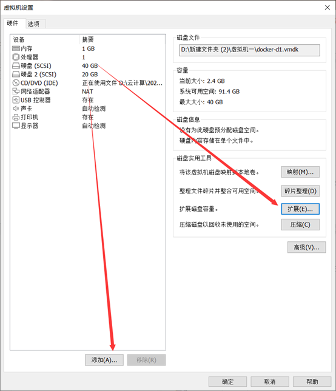
2、查看磁盘空间大小
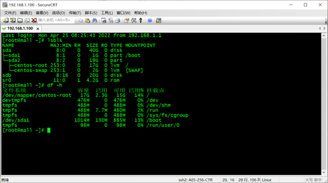
3.使用fdisk -l命令查看磁盘信息
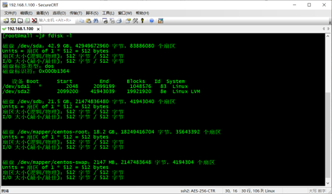
4.使用fdisk /dev/sda, 创建新分区
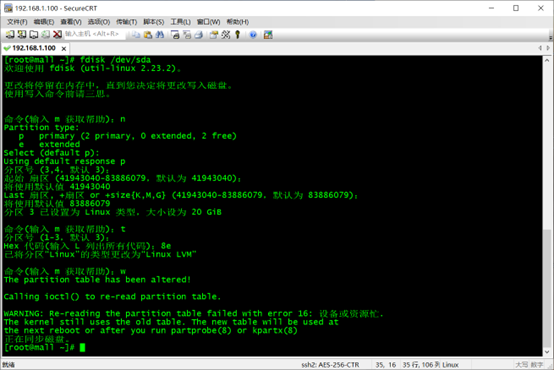
5.重启Linux操作系统，使用reboot命令。
6.创建物理卷。
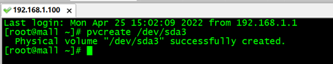
7.查看新建的物理卷和大小，使用pvdisplay命令。
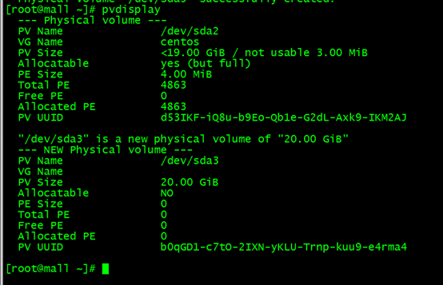
8.将添加新的物理卷，加载到centos卷组
9.查看卷组信息，使用vgdisplay命令。
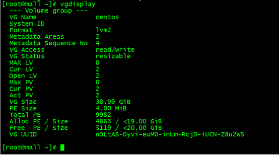
10.增加centos大小，增加15G
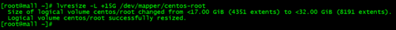
11.重新识别centos-root大小
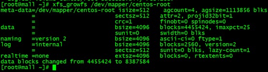
12.查看扩容后的大小
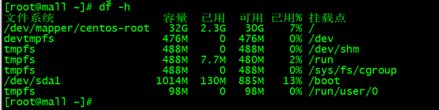
二、给系统添加新硬盘
1、 执行命令pvcreate/dev/sdb在分区/dev/sdb上创建物理卷。
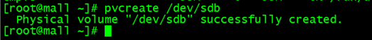
2、执行命令pvs查看当前物理卷，当然也可以用pvdisplay命令来查看。
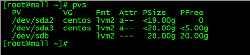
3、 执行命令lvs，查看/home目录所在逻辑卷所属的卷组名称
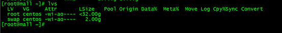
4、 执行命令vgextend centos /dev/sdb
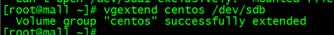
5、 执行命令lvextend将逻辑卷增大15G
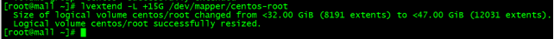
6、 执行命令xfs_growfs /dev/mapper/centos-root同步一下
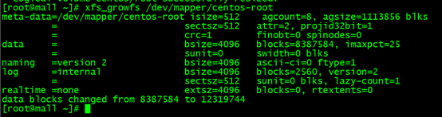
7、 查看扩容后的大小
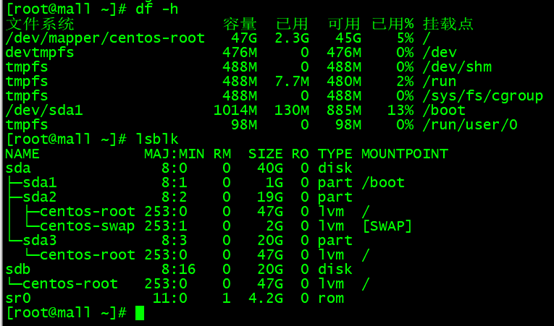
本博客所有文章除特别声明外，均采用 CC BY-SA 4.0 协议 ，转载请注明出处！